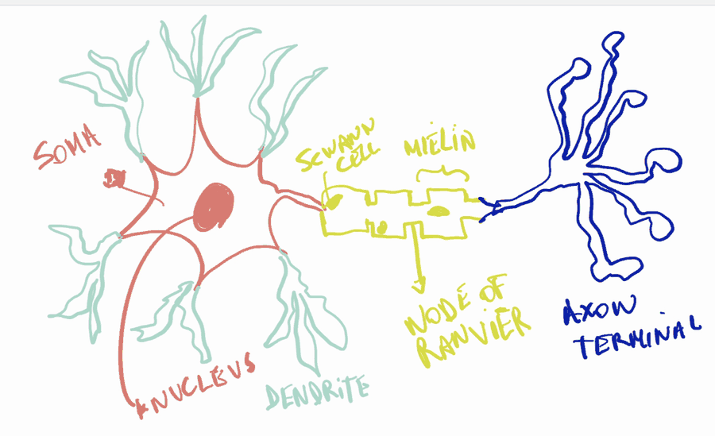
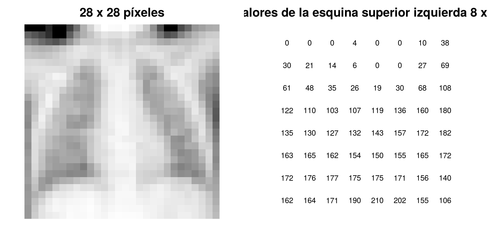
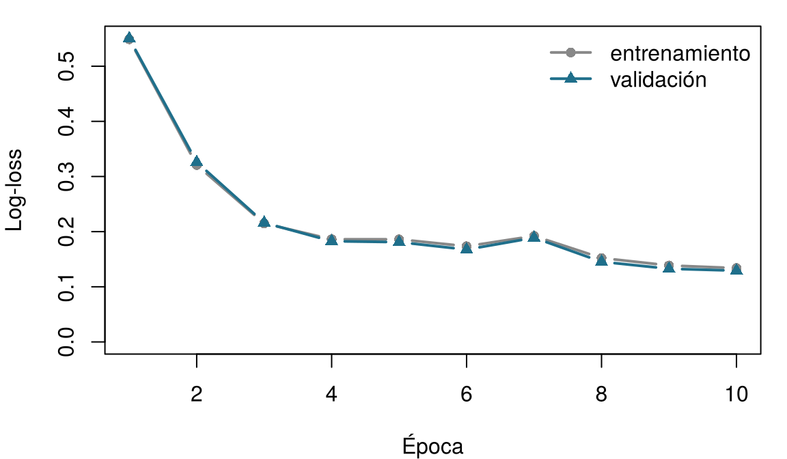

7 Redes neuronales y aprendizaje profundo
Una neurona artificial se inspira, de forma muy libre, en una célula nerviosa. Relaciona cada parte de una neurona biológica con la pieza de la neurona artificial que desempeña un papel parecido. Arriesga una respuesta: el capítulo explica cada una.
| Parte de la célula nerviosa | Equivalente en la neurona artificial |
|---|---|
| Las dendritas, que reciben señales de otras células | |
| La fuerza de cada sinapsis | |
| El cuerpo celular (soma), que suma las señales excitadoras e inhibidoras | |
| El segmento inicial del axón, que dispara solo por encima de un umbral | |
| Las terminales del axón, que transmiten la señal |
Cómo usar este capítulo
Este capítulo toma prestadas algunas ideas de los anteriores:
- Un modelo es una representación simplificada de la realidad, \(y = f(\mathbf{x}) + \varepsilon\), y aprender significa estimar \(f\) a partir de los datos (Definición 1.3). Cada fila de un conjunto de datos es una instancia, con características \(\mathbf{x}_i\) y un desenlace \(y_i\) (Definición 1.7).
- Los modelos se ajustan en un conjunto de entrenamiento y se juzgan en un conjunto de prueba que nunca vieron (Sección 1.8); un modelo demasiado flexible sufre sobreajuste (Definición 1.8). Las decisiones tomadas durante el entrenamiento usan un conjunto de validación aparte (Capítulo 3).
- Una función de pérdida \(\mathcal{L}\) mide cuán equivocadas están las predicciones de un modelo (Capítulo 3).
- La regresión logística convierte una suma ponderada en una probabilidad mediante la función logística (sigmoide) \(\sigma(z) = 1/(1+e^{-z})\). Los errores de un clasificador se resumen en una matriz de confusión, de la que salen la sensibilidad (la proporción de personas enfermas que señala) y la especificidad (la proporción de personas sanas que descarta); un umbral \(t\) convierte una probabilidad en una decisión (Capítulo 5).
- La tasa de aprendizaje \(\eta\) controla el tamaño del paso que da un algoritmo de aprendizaje (Capítulo 6, boosting).
| Ejemplo | Quién o qué | Desenlace | Caras que vas a conocer |
|---|---|---|---|
| 1 UCI Sala 7 | 1250 pacientes de UCI en 4 hospitales | variación de la creatinina en 48 h (lesión renal aguda si ≥ 0,3 mg/dL) | Aoife (71 años, sepsis, riesgo limítrofe), Tomás (54 años, riesgo bajo), Priya (38 años, riesgo alto); la Dra. Emma Walsh; Seán, el farmacéutico |
| 2 Ensayo ONCO-1 | 1000 pacientes aleatorizados a quimioterapia o no | reducción del tumor (%) | pacientes #0042 y #0917 |
| 3 HomeBeat | 500 personas que llevan un reloj inteligente en casa | puntuación de estrés, evento de deterioro | Lena |
| 4 CellWorks | 420 lotes de producción de una terapia celular | puntuación de potencia | lote CW-118 |
Los cuatro conjuntos de datos son simulados y pueden descargarse en el apéndice de datos. La presentación completa está en la Sección 1.1.
Este capítulo usa también imágenes reales: radiografías de tórax pediátricas de la colección pública PneumoniaMNIST, descrita en el apéndice de datos.
Este capítulo va de una sola célula nerviosa a una red que lee radiografías de tórax. Tiene doce secciones y un Laboratorio, siete comprobaciones rápidas, tres widgets “Pruébalo”, un desafío y tres misiones de programación en R y Python. Calcula unas dos horas. Nada pesado se ejecuta en tu navegador: la red convolucional se entrenó una sola vez y sus resultados se cargan desde archivos.
| Símbolo | Significado | Sección |
|---|---|---|
| \(x_1, \dots, x_p\); \(\mathbf{x}\) | entradas de una neurona (las características) | Sección 7.2 |
| \(w_1, \dots, w_p\); \(\mathbf{w}\) | pesos de una neurona | Sección 7.2 |
| \(b\) | sesgo de una neurona | Sección 7.2 |
| \(z = \mathbf{w}^{\top}\mathbf{x} + b\) | suma ponderada (preactivación) | Sección 7.2 |
| \(g(\cdot)\) | función de activación | Sección 7.2 |
| \(\sigma(z)\) | función logística (sigmoide) | Sección 7.2 |
| \(\mathcal{L}\) | función de pérdida | Sección 7.3 |
| \(\eta\) | tasa de aprendizaje | Sección 7.3 |
| \(\mathbf{W}^{(l)}\), \(\mathbf{b}^{(l)}\) | matriz de pesos y vector de sesgos de la capa \(l\) | Sección 7.4 |
| \(\mathbf{h}^{(l)}\) | representación oculta (salida) de la capa \(l\) | Sección 7.4 |
La lista completa está en la página de notación. Los pesos de las redes neuronales se escriben \(w\) y \(\mathbf{W}\); los coeficientes de los modelos estadísticos conservan la letra \(\beta\).
7.1 Del cerebro a las neuronas artificiales
Las redes neuronales artificiales nacieron como un intento de capturar, en una forma matemática muy simplificada, la manera en que calculan las células nerviosas. Esta idea se llama a veces neuromorfismo: representar la computación con unidades vagamente inspiradas en el cerebro, donde las “neuronas” reciben señales, las combinan y transmiten una respuesta, y las “sinapsis” deciden cuánto cuenta cada señal. El objetivo nunca fue copiar fielmente la biología (los sistemas biológicos son demasiado complejos para eso), sino tomar prestada su capacidad de detectar patrones, integrar evidencias y generalizar (Mead 1990).
Las neuronas fueron descritas en detalle por primera vez por el histólogo español Santiago Ramón y Cajal, cuyos dibujos mostraron que el sistema nervioso está formado por células separadas, conectadas en puntos de contacto, y que es considerado uno de los fundadores de la neurociencia moderna (Ramón y Cajal 1909). Aunque existen muchos tipos de neurona, una neurona “canónica” tiene las partes esbozadas en la Figura 7.1.

- Las dendritas, el árbol de entrada. Prolongaciones ramificadas que reciben señales. Una neurona suele recibir miles de entradas sinápticas en sus dendritas y su cuerpo celular. Llegan como potenciales postsinápticos excitadores, que elevan el voltaje de la membrana, e inhibidores, que lo reducen.
- Las sinapsis, las conexiones ponderadas. Cada punto de contacto entre dos neuronas es una sinapsis. Las sinapsis difieren en fuerza, y esa fuerza cambia con el uso. Esta plasticidad es la base biológica del aprendizaje y la memoria.
- El soma, el integrador. El cuerpo celular suma los potenciales excitadores e inhibidores que le llegan: en la práctica, una suma ponderada biofísica, moldeada por las propiedades eléctricas de la membrana y por la forma de las dendritas.
- El segmento inicial del axón, el punto de decisión. En la base del axón, canales de sodio dependientes de voltaje, densamente agrupados, deciden si la neurona dispara. Si el potencial de membrana sumado supera un umbral (normalmente alrededor de −55 mV), comienza una despolarización rápida: el potencial de acción, o espiga.
- El axón y sus terminales, el cable de salida. La espiga recorre el axón, a menudo aislado por mielina, que acelera la conducción. En las terminales libera neurotransmisores que influyen en las células siguientes.
En resumen, una célula nerviosa recibe muchas señales, las pondera y las suma, dispara si la suma supera un umbral y transmite el resultado (Kandel et al. 2021). Ten presentes estos cuatro verbos: la neurona artificial conserva exactamente estos y descarta casi todo lo demás.
7.2 La neurona artificial
En 1943, Warren McCulloch y Walter Pitts propusieron una neurona matemática que suma entradas binarias y dispara cuando la suma supera un umbral (McCulloch y Pitts 1943). En 1958, Frank Rosenblatt añadió lo que faltaba: pesos aprendidos a partir de ejemplos. Llamó a su máquina perceptrón (Rosenblatt 1958).
Definición 7.1 (Neurona artificial (perceptrón)) Una neurona artificial recibe entradas numéricas \(x_1, \dots, x_p\), multiplica cada una por un peso \(w_j\), añade un sesgo (bias) \(b\) y pasa la suma ponderada \[ z = w_1 x_1 + w_2 x_2 + \cdots + w_p x_p + b = \mathbf{w}^{\top}\mathbf{x} + b \qquad(7.1)\] por una función de activación \(g\), lo que da su salida \(\hat y = g(z)\). Los pesos y el sesgo son los parámetros de la neurona: se aprenden a partir de los datos. El perceptrón original de Rosenblatt usaba una activación escalón.
Los pesos indican cuánto importa cada entrada, y en qué dirección: un peso positivo grande empuja la salida hacia arriba, uno negativo la empuja hacia abajo, y un peso cercano a cero significa que la entrada se ignora. El sesgo desplaza el punto en el que la neurona “dispara”, sean cuales sean las entradas; desempeña un papel vagamente parecido al del umbral de disparo de una célula nerviosa.
Definición 7.2 (Función de activación) Una función de activación \(g\) convierte la suma ponderada \(z\) en la salida de la neurona. Las opciones más comunes son la función escalón, \(g(z) = 1\) si \(z \ge 0\) y \(0\) en caso contrario (el perceptrón de Rosenblatt); la función logística (sigmoide), \(g(z) = \sigma(z) = 1/(1+e^{-z})\), que da un número entre 0 y 1; y la unidad lineal rectificada (ReLU), \(g(z) = \max(0, z)\), que deja pasar los valores positivos sin cambios, pone a cero los negativos y es la opción por defecto dentro de las redes modernas (Nair y Hinton 2010).
La Figura 7.2 dibuja una neurona con tres entradas.
La Figura 7.3 superpone la imagen biológica a la artificial: las entradas llegan por las “dendritas”, la suma ponderada es el “soma”, la activación hace el papel del axón que decide si dispara, y la salida sale por la “terminal del axón”.

La analogía ayuda a recordar las partes, pero es muy libre. Las neuronas reales se comunican mediante espigas cuyo momento transporta información; sus dendritas hacen cálculos locales, no solo sumas; neuromoduladores como la dopamina cambian la respuesta de circuitos enteros; y las sinapsis cambian según reglas biológicas que no se parecen en nada al algoritmo que entrena las redes artificiales. Una neurona artificial es una suma ponderada seguida de una función sencilla. Su poder viene de conectar muchas de ellas y de aprender los pesos, no de parecerse a un cerebro.
Un colega dice: “Las redes neuronales funcionan tan bien porque copian el funcionamiento del cerebro.” ¿Cuál es la mejor respuesta?
7.2.1 Una neurona con sigmoide es una regresión logística
Elige la sigmoide como activación y vuelve a mirar la Ecuación 7.1: \[ \hat y = \sigma(w_1 x_1 + \cdots + w_p x_p + b) = \frac{1}{1 + e^{-(\mathbf{w}^{\top}\mathbf{x} + b)}} . \] Este es exactamente el modelo de regresión logística del Capítulo 5, \(P(y = 1 \mid \mathbf{x}) = \sigma(\beta_0 + \beta_1 x_1 + \cdots + \beta_p x_p)\), con los pesos en el papel de los coeficientes (\(w_j = \beta_j\)) y el sesgo en el papel del intercepto (\(b = \beta_0\)). La suma ponderada \(z\) es el log-odds (el logaritmo de la odds), y la salida es una probabilidad. Una sola neurona sigmoide es una regresión logística: todo lo que aprendiste sobre interpretar odds ratios, elegir umbrales y comprobar la calibración se aplica a ella.
Piensa en Aoife Byrne, de 71 años, ingresada en la UCI Sala 7 con sepsis, cuyo riesgo de lesión renal aguda (LRA) el equipo sopesó en el Capítulo 1. La regresión logística principal del Capítulo 5 predice la LRA (un aumento de la creatinina de al menos 0,3 mg/dL en 48 horas (Kidney Disease: Improving Global Outcomes (KDIGO) Acute Kidney Injury Work Group 2012)) a partir de cinco características del ingreso y se ajustó a los 1000 pacientes de entrenamiento de la partición compartida. Su intercepto es −1,1705 y sus coeficientes son 0,4031 por punto de SOFA (Vincent et al. 1996), 0,2968 por mmol/L de lactato, −0,0358 por mmHg de la presión arterial media más baja, 2,3413 por mg/dL de creatinina basal y −2,6425 por unidad de adherencia al protocolo (una proporción de 0 a 1). Leídos como una neurona, son cinco pesos \(w_1, \dots, w_5\) y un sesgo \(b\). Aoife tiene SOFA 6, lactato de 2,1 mmol/L, PAM mínima de 66 mmHg, creatinina basal de 1,0 mg/dL y adherencia al protocolo de 0,72. Calcula tú mismo la salida de su neurona.
La neurona de Aoife. La suma ponderada z ya está calculada. Rellena el hueco con la activación sigmoide, para que p sea la probabilidad estimada de LRA de Aoife.
La sigmoide de z es 1 / (1 + exp(-z)).
p <- 1 / (1 + exp(-z))La sigmoide de z es 1 / (1 + np.exp(-z)).
p = 1 / (1 + np.exp(-z))La salida de la neurona, 0,486, es el riesgo de Aoife del Capítulo 5 (0,49), porque la neurona es ese modelo: mismas entradas, mismos pesos, misma sigmoide.
Geométricamente, una neurona traza una frontera recta. Los puntos en los que \(z = 0\) (donde la salida de la sigmoide es exactamente 0,5) cumplen \(\mathbf{w}^{\top}\mathbf{x} + b = 0\), que es una recta en dos dimensiones, un plano en tres y un hiperplano en más. Todo paciente a un lado recibe una probabilidad superior a 0,5; todo paciente al otro lado, inferior. Pruébalo.
El perceptrón para jugar. Cada punto es uno de los 1250 pacientes de la UCI Sala 7, coloreado según si hubo LRA. Para que quepa en pantalla, esta neurona tiene solo dos entradas, SOFA y lactato (un modelo didáctico, no el modelo de cinco características anterior). Las dos características están estandarizadas (0 = el paciente medio, 1 = una desviación típica por encima). Mueve los pesos y el sesgo: el sombreado es la salida de la neurona y la línea negra es su frontera \(z = 0\). La log-loss mide cuán equivocadas están las probabilidades (cuanto menor, mejor; decir 0,5 para todos da 0,693). Objetivo: con los datos de la Sala 7 y la sigmoide, bajar la log-loss de 0,57. Después cambia al segundo conjunto de datos, donde el riesgo depende de una combinación de las dos características, e intenta encontrar cualquier recta que funcione.
Cruces naranjas: hubo LRA (o el evento); círculos grises: no lo hubo.
En la Sala 7, una frontera recta hace un trabajo razonable: un SOFA más alto y un lactato más alto empujan ambos el riesgo hacia arriba, y la mejor recta busca el equilibrio entre los dos. En el segundo conjunto de datos, ninguna recta lo hace mejor que adivinar: con la sigmoide, la log-loss nunca baja de alrededor de 0,69, el valor de responder 0,5 para todos, sean cuales sean los pesos que elijas. (Una recta puede separar una esquina y acertar con unos dos tercios de los pacientes, pero el patrón verdadero acertaría con 0,89.) El patrón allí es una interacción: el riesgo es alto cuando ambas características son altas o ambas son bajas. En 1969, Marvin Minsky y Seymour Papert demostraron formalmente que un solo perceptrón no puede representar patrones de este tipo, el más sencillo de los cuales es el “o exclusivo” (XOR) (Minsky y Papert 1969); su análisis contribuyó a una larga pausa en la investigación sobre redes neuronales. La salida, las capas de neuronas, es el tema de la Sección 7.4. Pero antes tenemos que ver cómo una neurona encuentra sus pesos por sí sola.
Una neurona tiene activación sigmoide y dos entradas, edad y lactato. Tras el entrenamiento, \(w_{\text{lactato}} = 0{,}47\). ¿Qué significa este peso?
7.3 Cómo aprende una red: pérdida y descenso del gradiente
Todos los métodos de este libro ejecutan el mismo ciclo de aprendizaje: adivinar con los ajustes actuales, calificar la conjetura midiendo cuán equivocada está, ajustar los parámetros para que lo esté menos y repetir (Definición 1.6). Tú lo ejecutaste a mano con los controles deslizantes de arriba. Una máquina lo ejecuta con dos ingredientes: una función de pérdida que se encarga de calificar y el descenso del gradiente que se encarga de ajustar.
Calificar. Para un desenlace de tipo sí/no, la pérdida habitual es la log-loss, también llamada entropía cruzada binaria: \[ \mathcal{L}(\mathbf{w}, b) = -\frac{1}{n} \sum_{i=1}^{n} \Big[ y_i \log \hat p_i + (1 - y_i) \log (1 - \hat p_i) \Big], \qquad(7.2)\] donde \(\hat p_i\) es la salida de la neurona para el paciente \(i\). Una predicción correcta y segura casi no cuesta nada; una equivocada y segura (\(\hat p_i\) cercano a 0 para un paciente que sí desarrolló LRA) cuesta muchísimo. Minimizar la Ecuación 7.2 es lo mismo que maximizar la verosimilitud del Capítulo 5. Para un desenlace numérico, la pérdida habitual es el error cuadrático medio.
Ajustar. La pérdida depende de los pesos. Imagínala como un paisaje: cada posición es una elección de pesos y la altura es la pérdida. Queremos el valle más bajo. Desde cualquier punto de la ladera, el gradiente (el vector de las derivadas parciales \(\partial \mathcal{L} / \partial w_j\)) apunta cuesta arriba, en la dirección de mayor aumento. Así que damos un pequeño paso en sentido contrario.
Definición 7.3 (Descenso del gradiente) El descenso del gradiente minimiza una pérdida repitiendo la actualización \[ w_j \leftarrow w_j - \eta \, \frac{\partial \mathcal{L}}{\partial w_j} \quad \text{para cada peso } w_j \text{ (y del mismo modo para el sesgo)}, \qquad(7.3)\] donde la tasa de aprendizaje \(\eta > 0\) fija el tamaño de cada paso. Una tasa de aprendizaje demasiado pequeña hace que el progreso sea desesperadamente lento; una demasiado grande se pasa del fondo del valle y puede quedarse oscilando o divergir (Goodfellow, Bengio, y Courville 2016).
Para una sola neurona sigmoide con la log-loss, el gradiente tiene una forma notablemente sencilla: \[ \frac{\partial \mathcal{L}}{\partial w_j} = \frac{1}{n} \sum_{i=1}^{n} (\hat p_i - y_i)\, x_{ij}, \qquad \frac{\partial \mathcal{L}}{\partial b} = \frac{1}{n} \sum_{i=1}^{n} (\hat p_i - y_i). \] Cada paciente aporta su error \((\hat p_i - y_i)\) multiplicado por su entrada. Si la neurona subestima el riesgo de los pacientes con lactato alto, el gradiente del peso del lactato es negativo y la actualización aumenta ese peso. Es el análogo computacional de la plasticidad sináptica: las conexiones que habrían ayudado se refuerzan.
El descenso del gradiente paso a paso. Para que la figura tenga una sola dimensión, el modelo tiene aquí un solo peso: \(\hat p = \sigma(b + w \times \text{SOFA})\), con el SOFA estandarizado y el sesgo \(b\) fijado en su mejor valor. La curva es la log-loss para cada valor posible de \(w\); los puntos son los pasos dados desde el inicio, \(w = -1\). Aumenta el número de pasos y luego cambia la tasa de aprendizaje. Objetivo: llegar al fondo (a menos de 0,01 del mejor \(w\)) en 10 pasos como máximo. Después prueba una tasa de aprendizaje superior a 15.
La tasa de aprendizaje más pequeña no es la opción más segura: con η = 0,1, tras 30 pasos todavía no has recorrido ni la mitad del camino hasta el fondo. Una tasa moderada baja de forma constante; una tasa bien ajustada a la curvatura del valle llega en un puñado de pasos; una tasa demasiado grande salta de un lado del valle al otro. La misma tasa de aprendizaje \(\eta\) apareció en el boosting (Capítulo 6), con el mismo significado: cuánto fiarse de cada corrección.
Durante el entrenamiento, la pérdida baja, luego sube, luego vuelve a bajar, y oscila cada vez más de una época a la siguiente. ¿Cuál es la causa más probable?
Las redes reales se entrenan con algunos refinamientos de la misma idea:
- Minilotes y épocas. Calcular el gradiente sobre todos los pacientes en cada paso es lento. El descenso del gradiente estocástico usa en cada paso un lote (batch) aleatorio de unas pocas decenas de instancias (Robbins y Monro 1951). Una pasada completa por el conjunto de entrenamiento es una época; el entrenamiento suele durar muchas épocas.
- Optimizadores adaptativos. Adam ajusta por separado el tamaño del paso de cada peso, usando medias móviles de los gradientes anteriores; es la opción por defecto en la mayoría de los trabajos de aprendizaje profundo (Kingma y Ba 2015).
Definición 7.4 (Lote y época) Un lote (minilote, batch) es el subconjunto de instancias de entrenamiento usado en un paso del descenso del gradiente. Una época es una pasada completa por el conjunto de entrenamiento; con 4708 imágenes de entrenamiento y lotes de 64, una época son 74 pasos.
Descenso del gradiente a mano. El código de abajo ajusta por descenso del gradiente una regresión logística de la LRA sobre el SOFA estandarizado, partiendo de \(w = b = 0\) y dando 300 pasos con tasa de aprendizaje \(\eta = 1\). La función update realiza la Ecuación 7.3 para un parámetro: complétala. La última línea compara tu respuesta con el ajuste por máxima verosimilitud.
Escribe una función del valor actual y de su gradiente: function(theta, grad) theta - eta * grad.
update <- function(theta, grad) theta - eta * gradUsa una pequeña función anónima: lambda theta, grad: theta - eta * grad.
update = lambda theta, grad: theta - eta * grad7.4 De una neurona a una red
¿Por qué no debería bastar una sola frontera recta? Piensa en una cirujana vascular que estima el riesgo de rotura de un aneurisma de aorta abdominal. La edad, el tabaquismo, la hipertensión, la enfermedad coronaria y el tamaño del aneurisma importan (Wanhainen et al. 2024), pero no simplemente sumándose: un aneurisma grande en un fumador frágil con enfermedad coronaria es mucho más peligroso de lo que sugiere la suma de sus partes. Un clínico razona mediante conceptos intermedios (“¿cuánta reserva fisiológica tiene este paciente?”, “¿cuál es el peso de la carga aterosclerótica?”) y después los combina. Una sola neurona no puede hacerlo. Una capa de neuronas sí: cada neurona oculta calcula su propia combinación ponderada de las entradas, que puede hacer el papel de una de esas características intermedias, y la capa siguiente combina esas combinaciones. La diferencia con el clínico es que a la red nadie le dice qué características intermedias construir; aprende cualquier combinación que reduzca la pérdida, y esas combinaciones no tienen por qué corresponder a ningún concepto clínico con nombre.
Definición 7.5 (Perceptrón multicapa (red feed-forward)) Un perceptrón multicapa (MLP) organiza las neuronas en capas. La capa de entrada contiene las características (no hace ningún cálculo). Cada capa oculta \(l\) toma las salidas de la capa anterior, calcula sumas ponderadas y aplica una activación: \[ \mathbf{h}^{(1)} = g\big(\mathbf{W}^{(1)} \mathbf{x} + \mathbf{b}^{(1)}\big), \qquad \mathbf{h}^{(2)} = g\big(\mathbf{W}^{(2)} \mathbf{h}^{(1)} + \mathbf{b}^{(2)}\big), \quad \dots \qquad(7.4)\] donde la fila \(k\) de la matriz de pesos \(\mathbf{W}^{(l)}\) contiene los pesos de la neurona \(k\) de la capa \(l\), y \(\mathbf{b}^{(l)}\), sus sesgos. La capa de salida convierte la última representación oculta en la predicción, por ejemplo, una neurona sigmoide para una probabilidad. Cuando cada neurona de una capa está conectada con cada neurona de la siguiente, las capas son totalmente conectadas (densas). Una red con muchas capas ocultas se llama profunda.
7.4.1 Por qué la activación tiene que ser no lineal
Supón que quitáramos la activación, de modo que cada capa solo calculara una suma ponderada. Dos capas darían \[ \mathbf{W}^{(2)}\big(\mathbf{W}^{(1)}\mathbf{x} + \mathbf{b}^{(1)}\big) + \mathbf{b}^{(2)} = \underbrace{\mathbf{W}^{(2)}\mathbf{W}^{(1)}}_{\text{una matriz}}\,\mathbf{x} + \underbrace{\mathbf{W}^{(2)}\mathbf{b}^{(1)} + \mathbf{b}^{(2)}}_{\text{un vector}} , \] que vuelve a ser una única suma ponderada. Por muchas capas que apilemos, una red sin activaciones no lineales colapsa en una sola capa lineal: solo puede trazar fronteras rectas, exactamente igual que una neurona. Los pliegues que introducen la ReLU o la sigmoide en cada neurona oculta son lo que permite a la red representar fronteras curvas e interacciones como la del perceptrón para jugar.
Un equipo construye una red de diez capas pero, por error, no usa ninguna función de activación en las capas ocultas (la capa de salida tiene una sigmoide). ¿Qué puede representar esta red?
¿Hasta qué punto puede ser flexible una red con activaciones no lineales? El teorema de aproximación universal responde: una red con una sola capa oculta, con una activación no lineal como la sigmoide, puede aproximar cualquier función continua en una región acotada tanto como queramos, siempre que tenga suficientes neuronas ocultas (Cybenko 1989; Hornik, Stinchcombe, y White 1989). El teorema se cita a menudo con demasiada generosidad. Garantiza que una buena aproximación existe; no dice cuántas neuronas hacen falta (posiblemente un número enorme), ni que el descenso del gradiente la vaya a encontrar, ni que una red ajustada a una muestra finita vaya a generalizar a pacientes nuevos. En la práctica, las redes más profundas, con menos neuronas por capa, suelen ser más fáciles de entrenar para imágenes y señales, porque cada capa puede apoyarse en las características de la anterior (LeCun, Bengio, y Hinton 2015; Goodfellow, Bengio, y Courville 2016).
7.4.2 Retropropagación
Con miles de pesos repartidos en varias capas, ¿cómo obtenemos el gradiente de la pérdida respecto a cada uno? La respuesta es la retropropagación (backpropagation) (Rumelhart, Hinton, y Williams 1986).
Definición 7.6 (Retropropagación) La retropropagación calcula el gradiente de la pérdida respecto a cada peso de una red aplicando la regla de la cadena del cálculo capa por capa, desde la salida hacia la entrada. Una pasada hacia delante calcula las predicciones y la pérdida; una pasada hacia atrás devuelve el error, y cada capa transmite a la anterior cuánto contribuyeron sus salidas a la pérdida. Los gradientes se usan después en la Ecuación 7.3.
La intuición: un peso de la primera capa afecta a la pérdida solo a través de las neuronas ocultas a las que alimenta, que a su vez la afectan a través de la salida. La regla de la cadena multiplica estos efectos a lo largo de cada camino. Las bibliotecas de aprendizaje profundo como PyTorch (Paszke et al. 2019) y TensorFlow lo hacen automáticamente: tú escribes la pasada hacia delante y ellas calculan los gradientes.
7.4.3 Más de dos clases: softmax
Para un desenlace sí/no basta una neurona de salida sigmoide. Para \(C\) clases mutuamente excluyentes (por ejemplo, normal, neumonía bacteriana y neumonía vírica), la capa de salida tiene \(C\) neuronas con sumas ponderadas \(z_1, \dots, z_C\), y la función softmax (Goodfellow, Bengio, y Courville 2016) las convierte en probabilidades que suman 1: \[ P(\text{clase } c \mid \mathbf{x}) = \frac{e^{z_c}}{\sum_{c'=1}^{C} e^{z_{c'}}} . \qquad(7.5)\] Con \(C = 2\), la softmax se reduce a la función logística. La softmax vuelve en la Parte V, donde un modelo de lenguaje la usa para asignar una probabilidad a cada posible palabra siguiente.
7.5 Las imágenes son números: tensores
Las redes neuronales dan lo mejor de sí con datos cuya estructura una tabla oculta: imágenes, señales y texto. Antes de darles una radiografía, necesitamos un término de vocabulario.
Definición 7.7 (Tensor) Un tensor es una matriz generalizada de números con cualquier número de dimensiones (ejes). Un solo número es un tensor de orden 0, un vector de orden 1, una matriz de orden 2; al añadir ejes se obtiene orden 3, orden 4, etc. La forma (shape) de un tensor enumera la longitud de cada eje.
Un tensor no es un objeto exótico: es el conocido vector o matriz, extendido a más ejes. En R:
v <- c(1, 2, 3) # orden 1: un vector
M <- matrix(1:6, nrow = 2) # orden 2: una matriz
A <- array(1:24, dim = c(2, 3, 4)) # orden 3: una pila de cuatro matrices 2 x 3
c(length(v)); dim(M); dim(A)[1] 3[1] 2 3[1] 2 3 4Una imagen en escala de grises es una matriz: alto × ancho, un número por píxel, pequeño para lo oscuro y grande para lo claro. Una radiografía de tórax de 512 × 512 píxeles es un tensor de orden 2 con forma (512, 512). Las imágenes en color (dermatoscopia, retinografías, histología teñida) añaden un eje de canales (rojo, verde, azul), con forma (alto, ancho, 3). Las redes se entrenan con lotes de imágenes, lo que añade un eje más: un lote de 64 radiografías en escala de grises es un tensor de orden 4 con forma (64, 1, 28, 28) en la convención de PyTorch (lote, canales, alto, ancho). Una tomografía computarizada o una resonancia magnética es una pila de cortes, (profundidad, alto, ancho), y la resonancia multisecuencia (T1, T2, FLAIR…) añade canales; los bucles de cine de ecografía añaden el tiempo. Sea cual sea la modalidad, la red ve un tensor de números con una etiqueta asociada. No ve pulmones ni tumores.
Este capítulo usa PneumoniaMNIST (Yang et al. 2023), una versión estandarizada de una colección pública de radiografías de tórax pediátricas de Cantón (Guangzhou), etiquetadas por médicos expertos (Kermany et al. 2018) y distribuidas también en Kaggle (Mooney 2018). MedMNIST reduce cada imagen a 28 × 28 píxeles para que una red pueda entrenarse en un portátil en un minuto. ¿Es demasiado pequeño? La Figura 7.5 compara radiografías de la misma colección en su resolución original y redimensionadas: la reducción suaviza las texturas finas, pero conserva los patrones de densidad a gran escala.
![Ocho radiografías de tórax pediátricas en dos filas de cuatro. Las columnas uno y dos están rotuladas como normal y muestran campos pulmonares oscuros y limpios, con bordes cardíacos nítidos; las columnas tres y cuatro están rotuladas como neumonía y muestran zonas más blancas e irregulares sobre los pulmones. La fila superior muestra las imágenes originales, de tamaños variados; la inferior, las mismas imágenes redimensionadas a 512 por 512 píxeles. En cada imagen aparece un marcador con la letra R.](images/toy_chest_comparison.jpg)
En las imágenes normales, los campos pulmonares son oscuros y bastante uniformes, porque los alvéolos llenos de aire absorben poca radiación; los vasos aparecen como líneas finas y ramificadas, y los bordes del corazón y del diafragma son nítidos. En las imágenes con neumonía hay zonas más blancas y densas (alvéolos ocupados por material inflamatorio) que difuminan la trama vascular y los bordes cardíacos y rompen la simetría entre los dos pulmones. Estos patrones a gran escala sobreviven al redimensionado; una versión de 28 × 28 conserva menos, pero lo suficiente para que una red lo haga mucho mejor que el azar. No pierdas de vista la letra “R”: volveremos a ella en la Sección 7.9.

7.6 Redes neuronales convolucionales
¿Podríamos dar directamente a un perceptrón multicapa los 784 píxeles de una imagen de 28 × 28? Podemos, y lo haremos (Sección 7.7). Pero es un despilfarro. Una primera capa totalmente conectada da a cada neurona oculta un peso propio para cada píxel, de modo que un patrón aprendido en la esquina superior izquierda tiene que aprenderse de nuevo en la inferior derecha; y, para una imagen de 512 × 512, una sola neurona oculta necesitaría 262 144 pesos. Las imágenes tienen dos propiedades que un diseño mejor puede aprovechar: los patrones útiles son locales (un borde, una mancha de opacidad) y el mismo patrón puede aparecer en cualquier parte.
En las décadas de 1950 y 1960, David Hubel y Torsten Wiesel descubrieron que las neuronas de la corteza visual responden a rasgos sencillos, como bordes con una orientación determinada, dentro de pequeñas regiones del campo visual (Hubel y Wiesel 1962). Las redes convolucionales incorporan esa misma idea en su arquitectura (LeCun et al. 1998).
Definición 7.8 (Convolución, filtro, mapa de características) Una convolución desliza una pequeña cuadrícula de pesos (un filtro o kernel, normalmente de 3 × 3) por la imagen. En cada posición, multiplica los pesos del filtro por los valores de los píxeles que tiene debajo y suma los productos (más un sesgo). El resultado, un número por posición, es un mapa de características (feature map): es grande donde la imagen se parece localmente al filtro. El mismo filtro se usa en todas las posiciones (compartición de pesos), y sus pesos se aprenden por retropropagación como cualquier otro.
Definición 7.9 (Pooling) El pooling reduce un mapa de características resumiendo pequeños bloques de él. El max pooling con una ventana de 2 × 2 conserva el valor más alto de cada bloque, lo que reduce a la mitad el alto y el ancho; el average pooling conserva la media. El pooling hace que la representación sea más pequeña y menos sensible a la posición exacta de un rasgo.
Definición 7.10 (Red neuronal convolucional (CNN)) Una red neuronal convolucional (CNN) apila bloques de convolución → activación (normalmente ReLU) → pooling. Los primeros bloques detectan patrones locales sencillos, como bordes; los bloques posteriores los combinan en patrones más grandes y abstractos. Los mapas de características finales se aplanan en un vector y pasan a capas totalmente conectadas que producen la predicción (LeCun et al. 1998; Goodfellow, Bengio, y Courville 2016).
Convolución sobre una radiografía de tórax. Elige una imagen y un filtro de 3 × 3. Los paneles muestran la entrada, el mapa de características que produce la convolución, el mismo mapa tras la ReLU (valores negativos puestos a cero) y el resultado de un max pooling de 2 × 2: el primer bloque de una CNN, hecho a mano. Los ocho últimos filtros los aprendió la red entrenada en la Sección 7.7. Punto de control: mira a qué responde al menos un filtro aprendido.
Los filtros hechos a mano hacen lo que dice su nombre: el filtro de bordes verticales se ilumina en los bordes izquierdo y derecho del tórax y del corazón, y el desenfoque elimina el detalle fino. Los filtros aprendidos son menos ordenados (a la red nunca se le dijo que buscara bordes), pero varios responden a las transiciones entre el pulmón oscuro y los tejidos más claros. Observa también que un filtro de 3 × 3 tiene solo nueve pesos y un sesgo, por grande que sea la imagen: la compartición de pesos es la razón por la que las CNN necesitan muchos menos parámetros que las redes totalmente conectadas para la misma imagen.
¿Por qué las redes convolucionales suelen superar a las redes totalmente conectadas en imágenes, con la misma cantidad de datos de entrenamiento?
La Figura 7.7 muestra la pequeña CNN que entrenamos con PneumoniaMNIST.
7.7 Una pequeña CNN para la neumonía pediátrica
Ahora entrenamos tres modelos con las 4 708 imágenes de entrenamiento de PneumoniaMNIST (Yang et al. 2023; Kermany et al. 2018), usamos las 524 imágenes de validación para vigilar el entrenamiento y los juzgamos una sola vez con las 624 imágenes de prueba, de las cuales el 62 % muestra neumonía:
- Una neurona: regresión logística sobre los 784 píxeles en bruto (785 parámetros).
- Un perceptrón multicapa: 784 píxeles → 64 neuronas ReLU → una neurona sigmoide, sin convoluciones (50 305 parámetros).
- La pequeña CNN de la Figura 7.7 (26 401 parámetros).
Las redes se entrenaron con el optimizador Adam (Kingma y Ba 2015) (tasa de aprendizaje 0,001), lotes de 64 y la log-loss de la Ecuación 7.2, durante 10 épocas como máximo, en el procesador de un portátil corriente, en alrededor de un minuto cada una. El script es ch07_pneumonia_cnn.py; fija la semilla aleatoria para que los números siguientes puedan reproducirse.
7.7.1 Vigilar el entrenamiento: sobreajuste, parada temprana, dropout

La Figura 7.8 muestra el ciclo de aprendizaje en acción. Las dos pérdidas bajan rápidamente en las tres primeras épocas y después más despacio; el pequeño repunte en la época 7 es el ruido del descenso del gradiente estocástico. Las dos curvas se mantienen juntas, así que, tras 10 épocas, esta pequeña red no muestra signos de sobreajuste. Si hubiéramos entrenado mucho más tiempo, la pérdida de entrenamiento habría seguido bajando mientras la de validación se estabilizaba y empezaba a subir: la red estaría empezando a memorizar las imágenes de entrenamiento (Definición 1.8). Dos defensas habituales:
Definición 7.11 (Parada temprana y dropout) La parada temprana (early stopping) vigila la pérdida en un conjunto de validación durante el entrenamiento y se queda con los pesos de la época con la menor pérdida de validación, deteniéndose cuando lleva un tiempo sin mejorar (Prechelt 1998). El dropout apaga al azar una fracción de las neuronas ocultas (por ejemplo, el 20 %) en cada paso de entrenamiento, para que la red no pueda depender de ninguna neurona aislada; al predecir se usan todas las neuronas (Srivastava et al. 2014). Ambas son formas de regularización: sacrifican un poco de ajuste en el entrenamiento a cambio de una mejor generalización.
Nuestro script se queda con los pesos de la época con la menor pérdida de validación: aquí, la última, la época 10, porque la pérdida de validación todavía estaba bajando.
7.7.2 Resultados en el conjunto de prueba
| Modelo | Parámetros | Exactitud | Sensibilidad | Especificidad | AUC |
|---|---|---|---|---|---|
| Una neurona (regresión logística sobre los píxeles) | 785 | 0,829 | 0,985 | 0,568 | 0,918 |
| Perceptrón multicapa (sin convoluciones) | 50 305 | 0,806 | 0,990 | 0,500 | 0,914 |
| Pequeña CNN | 26 401 | 0,862 | 0,954 | 0,709 | 0,922 |
Tres cosas destacan en la Tabla 7.1. Primero, la referencia es fuerte: una neurona que mira los píxeles en bruto ya alcanza un AUC de 0,918, y cualquier modelo más sofisticado debe juzgarse frente a ella: “un AUC de 0,92” sin una referencia no dice nada. Segundo, el MLP, con 64 veces más parámetros, no es mejor que una neurona: más parámetros no equivalen a un diseño mejor. Tercero, la CNN es la mejor de las tres, sobre todo porque es más específica (señala por error menos radiografías normales), con una exactitud de 0,862 y un AUC de 0,922, usando menos parámetros que el MLP. (En una ejecución en clase de un ejercicio parecido, con otra red pequeña y una muestra de prueba mucho más pequeña, la exactitud salió de alrededor de 0,91; con unos pocos cientos de imágenes de prueba, las diferencias de unos pocos puntos porcentuales caen dentro del margen del azar.)
Hay una cuarta observación, más incómoda. En las imágenes de validación, la exactitud de la CNN en la época 10 fue de 0,954; en las imágenes de prueba es de 0,862. Las imágenes de validación se extrajeron del mismo conjunto que las de entrenamiento, mientras que las de prueba proceden de una parte separada de la colección original (Yang et al. 2023), y a la red le resultan más difíciles. ¿Con los pacientes de quién se valida un modelo? Esta pequeña caída, dentro de un único conjunto de datos público, es una versión suave de lo que ocurre cuando un modelo llega a un hospital nuevo.
Esta es la matriz de confusión de la CNN en el conjunto de prueba:
| Predicho normal | Predicho neumonía | Total | |
|---|---|---|---|
| Realmente normal | 166 | 68 | 234 |
| Realmente neumonía | 18 | 372 | 390 |
| Total | 184 | 440 | 624 |
Léela como lo haría un clínico. 18 niños con neumonía serían enviados a casa (falsos negativos); 68 niños sin neumonía serían enviados a más pruebas (falsos positivos). ¿Valen lo mismo esos errores? Casi seguro que no: una neumonía que pasa inadvertida en un niño pequeño puede ser peligrosa, mientras que una prueba adicional innecesaria cuesta tiempo, dinero, algo de radiación y la angustia de los padres. El umbral de 0,5 es un valor por defecto, no una elección clínica. Como mostró el Capítulo 5, el punto de corte es donde entran los valores clínicos: bajarlo a 0,3 detecta más neumonías a costa de más falsas alarmas. Calcula cuántas.
Bajar el umbral. El archivo de predicciones del conjunto de prueba tiene una fila por imagen de prueba: su label verdadero (1 = neumonía) y la probabilidad p_cnn que le asigna la CNN. Cuenta los niños con neumonía que seguirían pasando inadvertidos si el equipo señalara toda imagen con p_cnn igual o superior a 0,3.
Una imagen pasa inadvertida cuando muestra neumonía (label == 1) pero su probabilidad está por debajo del umbral, 0,3.
sum(pred$label == 1 & pred$p_cnn < 0.3)Una imagen pasa inadvertida cuando muestra neumonía (label == 1) pero su probabilidad está por debajo del umbral, 0,3.
((pred["label"] == 1) & (pred["p_cnn"] < 0.3)).sum()7.8 Más profundo no es automáticamente mejor: encuentra el error
La herramienta del proveedor tiene cincuenta capas; la nuestra tiene dos capas convolucionales. ¿Seguro que más profundo es mejor? Aquí tienes una comparación de la primera edición de este libro, del tipo que circula en tutoriales y presentaciones, obtenida entrenando cuatro redes con PneumoniaMNIST y evaluándolas con las mismas 624 imágenes de prueba:
| Modelo | Exactitud de prueba declarada |
|---|---|
| TinyCNN (dos capas convolucionales) | 0,625 |
| ResNet-18, preentrenada en ImageNet (He et al. 2016) | 0,870 |
| ResNet-50, preentrenada en ImageNet (He et al. 2016) | 0,389 |
| EfficientNet-B0, preentrenada en ImageNet (Tan y Le 2019) | 0,556 |
La historia tentadora se escribe sola: la red diminuta es demasiado débil, ResNet-18 da en el punto justo y las redes más grandes son “demasiado sensibles” para funcionar con imágenes médicas. Ninguno de los números de la Tabla 7.3 es fiable: cada uno sale de un flujo de procesamiento roto. Antes de seguir leyendo, busca las pistas.
- 0,625 es exactamente la prevalencia de neumonía en el conjunto de prueba. Un modelo que responde “neumonía” para todos los niños obtiene 0,625. Una exactitud igual a la prevalencia es la firma de un modelo que predice una sola clase.
- ResNet-50, con 0,389, apenas supera 0,375, la exactitud de decir que todos los niños son normales: la misma firma en la dirección opuesta. EfficientNet, con 0,556, queda por debajo del 0,625 que no requiere ningún modelo. Algo falla de forma sistemática.
Dos de los errores son visibles en código como este (simplificado a partir de los scripts de entrenamiento originales):
# Error A: un generador como datos de entrenamiento
def convert_to_rgb(loader):
for imgs, lbls in loader:
yield imgs.repeat(1, 3, 1, 1), lbls # escala de grises -> 3 canales
train_rgb = convert_to_rgb(train_loader) # un generador: solo puede leerse UNA vez
for epoch in range(3):
for images, labels in train_rgb: # las épocas 2 y 3 no ven ningún dato
...# Error B: preprocesamiento distinto en entrenamiento y en prueba
resize_to_224 = transforms.Resize((224, 224))
# entrenamiento: imágenes ampliadas a 224 x 224 antes de entrar en ResNet-50 / EfficientNet
# prueba: test_loader_rgb da las imágenes originales de 28 x 28 -- sin redimensionarEl error A convierte en silencio “3 épocas” en una: un generador de Python se agota tras una sola pasada, y los bucles siguientes simplemente no hacen nada: ningún error, ningún aviso. El error B entrena la red con imágenes grandes y la prueba con imágenes pequeñas. ¿Por qué no se bloquea? Porque ResNet y EfficientNet terminan con global average pooling (Lin, Chen, y Yan 2014), que promedia cada mapa de características sea cual sea su tamaño; la red acepta una imagen de 28 × 28 con la misma tranquilidad que una de 224 × 224, y produce disparates con total seguridad. El error A afectó a la ejecución de ResNet-18, cuyas “tres épocas” fueron una sola; el error B afectó a las ejecuciones de ResNet-50 y EfficientNet.
No podemos volver a entrenar las grandes redes preentrenadas en un navegador, pero los errores no dependen del tamaño de la red. Reprodujimos cada uno con una pequeña CNN que, como ResNet, termina en global average pooling, la entrenamos durante 10 épocas y después corregimos el error:
| Flujo | Exactitud, con error | Neumonías inadvertidas, con error | Falsas alarmas, con error | Exactitud, corregido | Neumonías inadvertidas, corregido | Falsas alarmas, corregido |
|---|---|---|---|---|---|---|
| A. Generador agotado tras la época 1 | 0,625 | 0 | 234 | 0,825 | 16 | 93 |
| B. Entrenado con imágenes de 56 píxeles, probado con imágenes de 28 píxeles | 0,529 | 293 | 1 | 0,835 | 29 | 74 |
Con el error A, el registro del entrenamiento muestra 74 lotes en la primera época y 0 en cada una de las siguientes. Tras una sola época, nuestra red todavía no había aprendido a separar las clases, decía “neumonía” para todos los niños y obtenía exactamente la prevalencia, 0,625, el número de TinyCNN en la Tabla 7.3. Corregida, la misma red llega a 0,825. Con el error B, la red, ante imágenes de la mitad del tamaño de aquellas con las que se entrenó, dice “normal” para casi todos los niños y deja pasar 293 de las 390 neumonías; corregida, llega a 0,835. Cuando los flujos son correctos, los benchmarks publicados sitúan a ResNet-18 y ResNet-50 en PneumoniaMNIST en la misma franja que nuestra CNN de dos capas, con exactitudes de aproximadamente 0,85 a 0,89 (Yang et al. 2023).
Entonces, ¿más profundo es mejor? No automáticamente. La profundidad ayuda cuando hay muchas imágenes, detalle abundante (estudios a resolución completa, no miniaturas de 28 × 28) y un flujo correcto. Con datos pequeños y de baja resolución, una red pequeña puede igualar a una grande, y una red grande es más frágil: más ajustes que acertar, más maneras de fallar en silencio. Los proveedores venden profundidad; los clínicos deberían comprar adecuación: pruebas de que el sistema funciona en pacientes como los suyos, a través de un flujo que alguien ha revisado.
El clasificador de neumonía de un colega tiene una exactitud de prueba de 0,742. En su conjunto de prueba, el 74,2 % de las imágenes muestra neumonía. ¿Qué deberías comprobar primero?
7.8.1 Aprendizaje por transferencia
¿Por qué ResNet y EfficientNet estaban “preentrenadas en ImageNet”, para empezar?
Definición 7.12 (Aprendizaje por transferencia) El aprendizaje por transferencia (transfer learning) reutiliza una red entrenada con un gran conjunto de datos para una tarea como punto de partida para otra. Una CNN entrenada con millones de fotografías cotidianas (la colección ImageNet (Deng et al. 2009; Krizhevsky, Sutskever, y Hinton 2012)) ha aprendido en sus primeras capas rasgos visuales generales (bordes, texturas, formas) (Yosinski et al. 2014). Su capa final se sustituye por otra adecuada a la nueva tarea (por ejemplo, una sola neurona sigmoide para la neumonía), y la red se somete a un ajuste fino (fine-tuning) con las nuevas imágenes, a menudo con una tasa de aprendizaje pequeña.
El aprendizaje por transferencia puede reducir mucho el número de imágenes médicas etiquetadas que se necesitan, lo que importa porque las etiquetas de expertos son caras. Sin embargo, sus beneficios en imágenes médicas son menores y menos constantes de lo que se suele suponer: las radiografías no se parecen a las fotos de vacaciones, y redes pequeñas entrenadas desde cero pueden hacerlo igual de bien en algunas tareas médicas (Raghu et al. 2019). Las redes preentrenadas también esperan entradas parecidas a sus datos de entrenamiento (tres canales de color, cierto tamaño, cierta normalización) y, como muestra el error B, nada te impide darles otra cosa. Por último, los datos originales traen consigo sus propios sesgos.
Diagnostica cada flujo. ¿Qué problema explica el síntoma?
- El registro del entrenamiento muestra 74 lotes en la época 1 y 0 lotes en todas las épocas siguientes. Generador agotado
- Una red entrenada con imágenes de 56 píxeles obtiene 0,53 en imágenes de prueba de 28 píxeles y dice “normal” para casi todos los niños. Preprocesamiento incoherente
- Un modelo de respuesta tumoral en ONCO-1 alcanza un AUC de prueba de casi 1 porque tres “genes” de los datos son copias ruidosas del desenlace. Fuga de datos
- Un detector de neumonía aprende de qué hospital procede una radiografía, usando textos y marcadores grabados en la imagen, porque la neumonía era más frecuente en uno de los hospitales. Aprendizaje por atajos
- Las imágenes de entrenamiento se reescalaron con la media y la desviación típica de ImageNet; las imágenes de prueba se dejaron con los valores de píxel en bruto. Preprocesamiento incoherente
- Las copias volteadas y rotadas de cada imagen se crearon antes de la partición, de modo que hay copias de la misma radiografía tanto en el conjunto de entrenamiento como en el de prueba. Fuga de datos
7.9 Aprendizaje por atajos
Vuelve a mirar la letra “R” de la Figura 7.5. Es un marcador de lateralidad que coloca el técnico de radiología, y su estilo, tamaño y posición varían entre aparatos y hospitales. Una red no sabe qué partes de una imagen son anatomía y cuáles son etiquetas. Si algo distinto de la enfermedad predice el diagnóstico en los datos de entrenamiento, la red puede aprender eso en su lugar (DeGrave, Janizek, y Lee 2021).
No es hipotético. Una CNN entrenada para detectar neumonía en radiografías de tórax de varios sistemas hospitalarios aprendió a reconocer de qué hospital procedía la imagen y, como la neumonía era más frecuente en uno de ellos, esa información ayudaba a sus predicciones. En la mayoría de las comparaciones, su rendimiento fue significativamente peor con radiografías de sistemas hospitalarios que no había visto en el entrenamiento (Zech et al. 2018).
Definición 7.13 (Aprendizaje por atajos) El aprendizaje por atajos (shortcut learning) se produce cuando un modelo logra un buen rendimiento aprovechando características que están asociadas al desenlace en los datos de entrenamiento pero que no son su causa (un marcador, un tipo de escáner, un hospital, una regla colocada junto a lesiones cutáneas sospechosas), de modo que falla cuando esa asociación cambia (Geirhos et al. 2020).
Los atajos son difíciles de detectar solo con la exactitud, porque, en datos de la misma procedencia, sí predicen el desenlace. Se descubren probando el modelo con datos de otros centros, comprobando el rendimiento en subgrupos (Oakden-Rayner et al. 2020) y examinando a qué presta atención el modelo (el Capítulo 12 trata los métodos de explicación y sus límites).
Una CNN detecta el neumotórax con mucha precisión en el archivo de imágenes de un hospital. Muchas de las imágenes con neumotórax se tomaron después del tratamiento y muestran un drenaje torácico. ¿Cuál es la principal preocupación?
7.10 Redes neuronales para tablas: la Sala 7 y el ensayo ONCO-1
Las redes neuronales no sirven solo para imágenes. Desde el Capítulo 1, el libro compara cada método nuevo con los anteriores en los mismos pacientes, con la misma partición, las mismas características y las mismas métricas; ahora le toca a la red. En la Sala 7 entrenamos un pequeño perceptrón multicapa (dos capas ocultas de 32 y 16 neuronas ReLU, scikit-learn (Pedregosa et al. 2011)) con los mismos 1000 pacientes de entrenamiento que todos los demás modelos, después de estandarizar las características con las medias y las desviaciones típicas del conjunto de entrenamiento. El número de épocas se eligió por validación cruzada en las cinco particiones compartidas, como las rondas de XGBoost en el Capítulo 6. Para la variación de la creatinina usó las diez características del ingreso (P10); para la LRA, las cinco características del modelo principal del Capítulo 5 (P5), con una neurona de salida sigmoide.
| Cap. | Modelo | Predictores | MAE de VC | MAE de prueba | RMSE de prueba | R² de prueba |
|---|---|---|---|---|---|---|
| 1 | Media de entrenamiento (sin modelo) | ninguno | 0,241 | 0,236 | 0,297 | 0,000 |
| 1 | Regresión lineal solo con el SOFA | SOFA | 0,196 | 0,191 | 0,237 | 0,363 |
| 3 | Regresión lineal, dos predictores (conjunto didáctico) | P2 | 0,176 | 0,171 | 0,213 | 0,485 |
| 3 | Regresión kNN, k = 15, estandarizada (conjunto didáctico) | P2 | 0,179 | 0,176 | 0,217 | 0,467 |
| 3 | Regresión kNN, k = 22 por VC, estandarizada | P10 | 0,172 | 0,168 | 0,206 | 0,517 |
| 4 | Regresión lineal (MCO) | P10 | 0,147 | 0,141 | 0,174 | 0,656 |
| 4 | Regresión ridge (λ min) | P10 | 0,147 | 0,141 | 0,174 | 0,657 |
| 4 | Regresión ridge (λ 1-SE) | P10 | 0,151 | 0,143 | 0,175 | 0,651 |
| 4 | Lasso (λ min) | P10 | 0,147 | 0,141 | 0,174 | 0,657 |
| 4 | Lasso (λ 1-SE) | P10 | 0,152 | 0,144 | 0,177 | 0,643 |
| 4 | Elastic net (α = 1,0, λ min) | P10 | 0,147 | 0,141 | 0,174 | 0,657 |
| 4 | Elastic net (α = 1,0, λ 1-SE) | P10 | 0,152 | 0,144 | 0,177 | 0,643 |
| 6 | Árbol de regresión podado con la regla 1-SE (rpart) | P10 | 0,194 | 0,186 | 0,231 | 0,396 |
| 6 | Árbol de regresión grande (rpart, cp = 0,001) | P10 | 0,201 | 0,195 | 0,248 | 0,304 |
| 6 | Bagging de árboles de regresión (500 árboles) | P10 | 0,165 | 0,156 | 0,195 | 0,568 |
| 6 | Bosque aleatorio (500 árboles) | P10 | 0,165 | 0,153 | 0,191 | 0,587 |
| 6 | XGBoost (152 rondas, número elegido por VC con 5 particiones) | P10 | 0,157 | 0,148 | 0,184 | 0,614 |
| 7 | Red neuronal, MLP 32-16 (scikit-learn, 30 épocas) | P10 | 0,171 | 0,161 | 0,205 | 0,522 |
El MAE de prueba de la red, 0,161 mg/dL, es mejor que el de los árboles individuales del Capítulo 6 y el del kNN del Capítulo 3 con las mismas características (0,168), pero peor que el del bosque aleatorio (0,153) y el de XGBoost (0,148), y la regresión lineal (MCO) del Capítulo 4 sigue siendo la mejor (0,141). La Sala 7 se simuló con una relación lineal, así que la flexibilidad de las capas ocultas no tiene nada que encontrar y cuesta un poco de varianza.
| Cap. | Modelo | Predictores | Log-loss de VC | AUC de prueba | Brier | Pend. de calibración | Calibración global |
|---|---|---|---|---|---|---|---|
| 1 | Prevalencia: tasa de LRA en entrenamiento (sin modelo) | ninguno | 0,683 | 0,500 | 0,242 | n/d | 0,041 |
| 5 | Regresión logística, solo el SOFA | SOFA | 0,577 | 0,766 | 0,193 | 1,014 | 0,047 |
| 5 | Regresión logística (sin penalización), el modelo principal | P5 | 0,495 | 0,855 | 0,149 | 1,009 | 0,039 |
| 5 | Regresión logística ridge (λ min) | P5 | 0,499 | 0,855 | 0,152 | 1,246 | 0,039 |
| 5 | Regresión logística lasso (λ min) | P5 | 0,495 | 0,855 | 0,149 | 1,025 | 0,038 |
| 6 | Árbol de clasificación podado con la regla 1-SE (rpart) | P5 | 0,594 | 0,733 | 0,198 | 0,873 | 0,034 |
| 6 | Árbol de clasificación, profundidad 2 (rpart; el árbol de la puerta del Capítulo 6) | P10 | 0,616 | 0,735 | 0,198 | 0,958 | 0,015 |
| 6 | Bosque aleatorio clasificador (500 árboles) | P5 | 0,544 | 0,838 | 0,158 | 1,016 | 0,110 |
| 6 | Clasificador XGBoost (87 rondas, número elegido por VC con 5 particiones) | P5 | 0,525 | 0,842 | 0,157 | 1,111 | 0,051 |
| 7 | Red neuronal clasificadora, MLP 32-16 (scikit-learn, 10 épocas) | P5 | 0,505 | 0,857 | 0,149 | 1,037 | 0,093 |
Para la LRA, la red y la regresión logística principal del Capítulo 5 quedan prácticamente empatadas: AUC de prueba de 0,857 frente a 0,855, la misma puntuación de Brier hasta el tercer decimal (0,149) y una log-loss de validación cruzada algo peor para la red (0,505 frente a 0,495). Diferencias de unas milésimas son mucho más pequeñas de lo que 250 pacientes de prueba permiten distinguir. Los riesgos de la red son algo bajos en promedio (calibración global de 0,093), y a Aoife le asigna 0,42 en lugar de 0,49. Muchos más parámetros, ninguna información mejor.
ONCO-1. Una red también puede recibir las características clínicas y la expresión génica de los pacientes de ONCO-1 (las 1000 personas aleatorizadas a quimioterapia o no, entre ellas los pacientes #0042 y #0917) y predecir los dos desenlaces a la vez: la reducción del tumor en porcentaje (un número) y la “respuesta alta”, una reducción de al menos el 30 % (sí/no). Una red de salidas múltiples tiene capas ocultas compartidas, que construyen una única representación de cada paciente, y dos cabezas: una neurona de salida lineal para la reducción y una neurona de salida sigmoide para la probabilidad de respuesta alta. Las dos pérdidas (error cuadrático y log-loss) se suman, para que los gradientes de ambas tareas moldeen las capas compartidas.
Entrenamos una (PyTorch (Paszke et al. 2019); dos capas ocultas de 32 y 16 neuronas ReLU, dropout del 20 %) con los 800 pacientes de entrenamiento de la partición compartida, después de estandarizar cada característica con las medias y las desviaciones típicas del conjunto de entrenamiento, usando las mismas 53 características que los modelos de los Capítulos 3 a 6: tratamiento, intensidad de dosis, edad, grado del tumor, estado funcional y los 47 genes sin fuga. El número de épocas, 110, se eligió por validación cruzada en las cinco particiones compartidas.
| Cap. | Modelo | Predictores | MAE de VC | MAE de prueba | RMSE de prueba | R² de prueba |
|---|---|---|---|---|---|---|
| 3 | Media de entrenamiento (sin modelo) | ninguno | 17,04 | 16,62 | 18,42 | 0,00 |
| 3 | Regresión lineal, solo predictores clínicos | clínicos | 6,88 | 6,69 | 8,89 | 0,77 |
| 3 | Regresión lineal (MCO) | clínicos + 47 genes sin fuga | 3,28 | 3,47 | 4,40 | 0,94 |
| 4 | Regresión ridge (λ min) | clínicos + 47 genes sin fuga | 3,28 | 3,46 | 4,38 | 0,94 |
| 4 | Regresión ridge (λ 1-SE) | clínicos + 47 genes sin fuga | 3,43 | 3,52 | 4,40 | 0,94 |
| 4 | Lasso (λ min) | clínicos + 47 genes sin fuga | 3,24 | 3,36 | 4,30 | 0,95 |
| 4 | Lasso (λ 1-SE) | clínicos + 47 genes sin fuga | 3,39 | 3,47 | 4,43 | 0,94 |
| 4 | Elastic net (α = 0,8, λ min) | clínicos + 47 genes sin fuga | 3,24 | 3,36 | 4,30 | 0,95 |
| 4 | Elastic net (α = 0,8, λ 1-SE) | clínicos + 47 genes sin fuga | 3,38 | 3,46 | 4,42 | 0,94 |
| 6 | Bosque aleatorio (500 árboles) | clínicos + 47 genes sin fuga | 3,67 | 3,40 | 4,50 | 0,94 |
| 6 | XGBoost (353 rondas, número elegido por VC con 5 particiones) | clínicos + 47 genes sin fuga | 2,92 | 2,72 | 3,59 | 0,96 |
| 7 | Red neuronal de salidas múltiples, salida de la respuesta % (PyTorch, 110 épocas) | clínicos + 47 genes sin fuga | 3,14 | 2,89 | 3,64 | 0,96 |
Aquí la red supera a los modelos lineales: un MAE de prueba de 2,89 puntos porcentuales frente a 3,47 de la regresión lineal (MCO) del Capítulo 4 y 3,36 del lasso, y supera también al bosque aleatorio (3,40). Solo XGBoost, del Capítulo 6, lo hace mejor (2,72). Los errores de validación cruzada en los pacientes de entrenamiento cuentan la misma historia con una diferencia menor (3,14 frente a 3,28 de MCO), así que no se trata solo de un conjunto de prueba afortunado.
¿Por qué la red gana aquí y pierde en la Sala 7? Mira cómo se simuló ONCO-1 (sim_onco1.R). La reducción no es una suma ponderada de las características. El efecto de la quimioterapia sigue una curva dosis-respuesta que se satura, con una pequeña penalización por toxicidad a dosis altas; la dosis solo importa en quienes recibieron quimioterapia (una interacción entre tratamiento y dosis); y el porcentaje se corta en 0, de modo que un tumor que crece se registra como reducción nula. Un modelo lineal tiene que ajustar una única superficie plana a todo esto. Las unidades ReLU de las capas ocultas, como las divisiones de los árboles de XGBoost, pueden doblar esa superficie y encender y apagar partes de ella. La ganancia viene de la forma de los datos, no de que la red sea una red. En la Sala 7, donde la verdad es lineal, la misma flexibilidad no aporta nada. Y, con datos tabulares de este tamaño, los conjuntos de árboles bien ajustados suelen igualar o superar a las redes neuronales (Grinsztajn, Oyallon, y Varoquaux 2022), como hace aquí XGBoost.
Para la respuesta alta, la segunda cabeza se evalúa en los 84 pacientes de prueba del brazo de quimioterapia, como los clasificadores de los Capítulos 5 y 6:
| Cap. | Modelo | Predictores | Log-loss de VC | AUC de prueba | Brier | Pend. de calibración | Calibración global |
|---|---|---|---|---|---|---|---|
| 5 | Prevalencia: tasa de respuesta alta en entrenamiento (sin modelo) | ninguno | 0,503 | 0,500 | 0,190 | n/d | -0,279 |
| 5 | Regresión logística, 7 predictores elegidos (dosis, grado, estado funcional, edad, genes 01/05/12) | 7 predictores elegidos | 0,151 | 0,987 | 0,038 | 1,037 | 0,327 |
| 5 | Regresión logística (sin penalización), los 51 predictores | clínicos + 47 genes sin fuga | 3,022 | 0,896 | 0,110 | 0,145 | -4,891 |
| 5 | Regresión logística lasso (λ min) | clínicos + 47 genes sin fuga | 0,164 | 0,985 | 0,041 | 1,353 | 0,212 |
| 5 | Regresión logística elastic net (α = 0,5, λ min) | clínicos + 47 genes sin fuga | 0,171 | 0,985 | 0,040 | 1,703 | 0,029 |
| 5 | Regresión logística ridge (λ min) | clínicos + 47 genes sin fuga | 0,228 | 0,978 | 0,067 | 3,210 | -0,194 |
| 6 | Regresión logística ridge (C = 1, scikit-learn) | clínicos + 47 genes sin fuga | 0,190 | 0,977 | 0,050 | 1,351 | -0,079 |
| 6 | Árbol de clasificación, profundidad 4 (scikit-learn) | clínicos + 47 genes sin fuga | 2,459 | 0,890 | 0,123 | 0,167 | -0,762 |
| 6 | Bosque aleatorio clasificador (500 árboles) | clínicos + 47 genes sin fuga | 0,287 | 0,957 | 0,082 | 2,177 | -0,125 |
| 6 | Clasificador XGBoost (136 rondas, número elegido por VC con 5 particiones) | clínicos + 47 genes sin fuga | 0,222 | 0,971 | 0,058 | 1,097 | -0,106 |
| 7 | Red neuronal de salidas múltiples, salida de la respuesta alta (PyTorch; entrenada con los 800 pacientes de entrenamiento) | clínicos + 47 genes sin fuga | 0,209 | 0,991 | 0,034 | 1,245 | -0,358 |
La cabeza alcanza un AUC de prueba de 0,991, algo por encima de la regresión logística con 7 predictores del Capítulo 5 (0,987), con la puntuación de Brier más baja de la tabla (0,034). Dos advertencias. Con 84 pacientes de prueba, una diferencia de AUC de unas milésimas equivale a un puñado de pares de pacientes. Y la red tenía más de lo que aprender: se entrenó con los dos brazos, y la propia reducción, no solo la etiqueta sí/no, moldeó sus capas compartidas. Para los dos pacientes del Capítulo 5 predice una reducción del 30,9 % para #0042 (observada: 36,6 %) y del 21,6 % para #0917 (observada: 20,4 %), y probabilidades de respuesta alta de 0,92 y 0,12.
Una advertencia más. Tres “genes” del archivo de ONCO-1, el 08, el 14 y el 19, son copias ruidosas del desenlace, sembradas a propósito por la simulación, y ninguno de los modelos anteriores los usa. Añádelos y todos los modelos parecen espectaculares: hasta el MAE de prueba de la regresión lineal baja a 1,72 puntos porcentuales (Capítulo 3). Una puntuación casi perfecta con datos clínicos tabulares debería llevarte a buscar una fuga antes de celebrarlo.
7.11 Costes, regulación y confianza
Los hospitales no adoptan un modelo porque puntúe bien en un benchmark; lo adoptan cuando el sistema en su conjunto es clínicamente útil, asequible, auditable y legal (Kelly et al. 2019). El aprendizaje profundo, en particular, trae consigo varios costes y obligaciones.
- Etiquetas. Las redes profundas necesitan muchos ejemplos etiquetados y, en imagen médica, cada etiqueta suele ser tiempo de un especialista. Delimitar tumores o arbitrar desacuerdos entre lectores lo multiplica. Obtener imágenes es fácil; convertirlas en datos de entrenamiento fiables es lento y caro, y a menudo se lleva la mayor parte del presupuesto.
- Computación y mantenimiento. Entrenar redes profundas requiere aceleradores, y el coste se repite: los modelos deben revalidarse, y a menudo volver a entrenarse, cuando cambian los escáneres, los protocolos de imagen o las poblaciones de pacientes.
- Deriva. Un modelo que funciona bien en su lanzamiento puede degradarse a medida que evoluciona la práctica (Finlayson et al. 2021). Los reguladores esperan que fabricantes y hospitales vigilen el rendimiento tras la implantación, lo que exige recoger y evaluar datos de forma continua.
- Regulación. En la Unión Europea, el software destinado al diagnóstico es un producto sanitario (European Parliament and Council of the European Union 2017), y la IA usada como tal producto, o dentro de él, se clasifica como de alto riesgo según el Reglamento de IA (AI Act), con obligaciones de gobernanza de datos, documentación, transparencia, supervisión humana y seguimiento poscomercialización (European Parliament and Council of the European Union 2024). Los fabricantes deben documentar cómo se recogieron, etiquetaron y controlaron en calidad los datos de entrenamiento, de modo que los protocolos de anotación pasan a formar parte del expediente regulatorio.
- Opacidad y responsabilidad. Una red con miles o millones de pesos no puede leerse como una regresión logística. Los mapas de prominencia (saliency maps) y herramientas parecidas ofrecen vislumbres parciales, con sus propias incertidumbres (Capítulo 12). Por eso la mayoría de los marcos mantienen la IA como asistencial, con un clínico responsable de la decisión, lo que a su vez exige un buen diseño de la interfaz, integración en el flujo de trabajo y formación.
Una exactitud alta no es adopción. De vuelta en el comité de Emma, las preguntas útiles para el proveedor ya están claras: ¿Frente a qué referencia sencilla se midió el 95 %? ¿Con los pacientes de quién, en qué hospitales, con qué escáneres, a qué edades? ¿Cuáles son la sensibilidad y la especificidad en el umbral que proponen, y quién lo eligió? ¿Cómo se revisó el flujo de procesamiento? ¿Qué ocurre cuando cambie nuestro escáner?
7.12 Dónde encaja en el ciclo de decisión
Las redes neuronales son una forma de construir el paso del modelo cuando los datos son imágenes, señales u otras entradas cuyas características útiles nadie puede escribir de antemano: la red aprende sus propias características, capa a capa (Sección 7.4, Sección 7.6). La información que produce sigue siendo una probabilidad (una sola neurona sigmoide al final es una regresión logística), y entra en la decisión exactamente como en el Capítulo 5: a través de un umbral que refleja cuánto valen una neumonía que pasa inadvertida y una prueba innecesaria (Sección 7.7). ¿Qué puede salir mal? Errores en el flujo de procesamiento que fallan en silencio (Sección 7.8), atajos que desaparecen en un hospital nuevo (Sección 7.9), fugas que hacen que cualquier modelo parezca brillante (Sección 7.10) y la deriva tras la implantación (Sección 7.11). ¿Quién mantiene el control? Los clínicos que eligen el umbral, los equipos que revisan el flujo y las pruebas externas, y los pacientes cuyos valores debería reflejar el umbral.
7.13 Laboratorio: una neurona, una capa oculta y una CNN con radiografías de tórax
El Laboratorio trabaja con una muestra de PneumoniaMNIST del tamaño de un navegador: 200 imágenes de entrenamiento y 200 de prueba (archivo data/pneumonia_subset.csv, una fila por imagen, 784 columnas de píxeles). Muestra las imágenes como tensores, las reduce por pooling, entrena una neurona y una pequeña red con una capa oculta (con nnet (Venables y Ripley 2002) en R, y scikit-learn, NumPy y pandas (Pedregosa et al. 2011; Harris et al. 2020; McKinney 2010) en Python) y las compara con la CNN entrenada con las 4708 imágenes. Ejecútalo aquí o descárgalo: ch07_lab.es.R · ch07_lab.es.py.
Dos observaciones para llevarse. Primera: en estas 200 imágenes de prueba, el modelo de una neurona y la pequeña red con una capa oculta, entrenados con solo 200 imágenes reducidas por pooling, quedan más o menos igualados con la CNN entrenada con 4708 imágenes completas. Con 200 imágenes de prueba, una diferencia de 0,01 son dos imágenes: la muestra de prueba es demasiado pequeña para ordenar los modelos, y en el conjunto de prueba completo de 624 imágenes la CNN va por delante (Tabla 7.1). Segunda: el paso 3 importa. Sin estandarizar las características obtenidas por pooling, la red con capa oculta de Python puede quedarse atascada prediciendo una sola clase: otro detalle del flujo que falla en silencio. Borra esa línea y compruébalo.
7.14 Ejercicios
- Una neurona a mano. Una neurona sigmoide tiene pesos 0,8 (para la edad, en décadas) y −1,2 (para vacunado, 1 = sí) y sesgo −4. Calcula su salida para una persona de 70 años no vacunada y para una vacunada. ¿Cuáles son las odds ratios por diez años de edad y por la vacunación?
- El perceptrón para jugar. En el widget del perceptrón, encuentra pesos que den una log-loss inferior a 0,57 en la Sala 7. Compáralos con los coeficientes de una regresión logística con dos características estandarizadas, ajustada a los 1250 pacientes (intercepto 0,416, SOFA 1,111, lactato 0,308). ¿Qué característica importa más?
- Tasas de aprendizaje. En el widget del descenso del gradiente paso a paso, encuentra la tasa de aprendizaje más pequeña que llega al fondo en 10 pasos como máximo, y la tasa a partir de la cual el camino empieza a pasarse de largo. Explica lo que ves en términos de la curvatura de la pérdida.
- Colapso. Demuestra, con dos matrices de pesos 2 × 2 de tu elección, que dos capas lineales sin activación equivalen a una sola capa lineal. Después aplica la ReLU entre ellas a la entrada \((1, -1)\) y muestra que el resultado es distinto.
- Contar parámetros. Comprueba que la pequeña CNN de la Figura 7.7 tiene 26 401 parámetros: cuenta los pesos y sesgos de las dos capas convolucionales (filtros de 3 × 3), de la capa densa y de la neurona de salida. ¿Cuántos parámetros necesitaría una capa densa de 32 neuronas con una imagen de 224 × 224?
- Umbral. Con el archivo de predicciones del conjunto de prueba, calcula la sensibilidad y la especificidad de la CNN en los umbrales 0,1, 0,3, 0,5 y 0,7. ¿Cuál elegirías para unas urgencias pediátricas, y por qué? ¿Quién debería participar en esa elección?
- Encuentra el error. El bucle de evaluación de un colega informa de una exactitud de 0,375 para un clasificador binario en el conjunto de prueba de PneumoniaMNIST. ¿Qué ha ocurrido casi con seguridad? (Pista: 0,375 = 1 − 0,625.)
- Preguntas al proveedor. Escribe cinco preguntas que el comité de Emma debería enviar al proveedor antes de aceptar una prueba piloto, e indica qué sección de este capítulo motiva cada una.
1. Para la persona de 70 años no vacunada, \(z = 0{,}8 \times 7 - 4 = 1{,}6\) y \(\sigma(1{,}6) \approx 0{,}83\); para la vacunada, \(z = 0{,}4\) y \(\sigma(0{,}4) \approx 0{,}60\). Las odds ratios son \(e^{0{,}8} \approx 2{,}2\) por década y \(e^{-1{,}2} \approx 0{,}30\) por la vacunación.
4. Para cualesquiera \(\mathbf{W}^{(1)}, \mathbf{W}^{(2)}\), la composición es la única matriz \(\mathbf{W}^{(2)}\mathbf{W}^{(1)}\). Con la ReLU en medio, los elementos negativos de la salida de la primera capa se ponen a cero antes de la segunda capa, algo que una sola matriz no puede reproducir para todas las entradas.
5. Primera convolución: \(8 \times (3 \times 3 \times 1) + 8 = 80\). Segunda: \(16 \times (3 \times 3 \times 8) + 16 = 1\,168\). Densa: \(784 \times 32 + 32 = 25\,120\). Salida: \(32 + 1 = 33\). Total \(26\,401\). Con una imagen de 224 × 224, una capa densa de 32 neuronas necesitaría \(224 \times 224 \times 32 + 32 = 1\,605\,664\) parámetros.
7. Las predicciones están invertidas: el modelo (o la evaluación) predice “normal” para todas las imágenes, o las etiquetas y las predicciones están intercambiadas, de modo que la exactitud es igual a la proporción de imágenes normales. Comprueba la matriz de confusión y la codificación de las etiquetas.
7.15 Resumen
- Una neurona artificial calcula una suma ponderada de sus entradas más un sesgo y la pasa por una función de activación (escalón, sigmoide, ReLU). La analogía con las células nerviosas es muy libre.
- Una sola neurona sigmoide es una regresión logística: sus pesos son logaritmos de odds ratios, y traza una frontera recta.
- Las redes aprenden minimizando una pérdida con el descenso del gradiente; la tasa de aprendizaje fija el tamaño del paso, la retropropagación calcula los gradientes y el entrenamiento avanza por lotes y épocas.
- Las capas ocultas con activaciones no lineales permiten a las redes representar interacciones y fronteras curvas; sin no linealidad, las capas colapsan en una sola. La softmax extiende la sigmoide a muchas clases.
- Las imágenes son tensores. Las redes convolucionales reutilizan pequeños filtros aprendidos a lo largo de la imagen y aplican pooling a los resultados, lo que se adapta a las imágenes mucho mejor que las capas totalmente conectadas.
- La evaluación honesta sigue mandando: compara con una referencia sencilla, lee la matriz de confusión y elige el umbral a partir de los valores clínicos. La parada temprana y el dropout limitan el sobreajuste.
- En los ejemplos que recorren el libro, una red pequeña no hace magia: en la Sala 7, que es lineal, no supera a la regresión lineal ni a la logística; en ONCO-1, donde la dosis-respuesta es curva y tratamiento y dosis interactúan, supera a los modelos lineales, pero no a XGBoost.
- Más profundo no es automáticamente mejor: los errores silenciosos en el flujo, el aprendizaje por atajos y la fuga de datos pueden producir cifras impresionantes o desastrosas que no significan nada. El aprendizaje por transferencia ayuda cuando las etiquetas escasean, pero trae sus propios supuestos.
Dónde se usa este capítulo más adelante
| Idea de este capítulo | Dónde reaparece |
|---|---|
| Descenso del gradiente, tasa de aprendizaje, épocas | Capítulo 16 (entrenar un modelo de lenguaje neuronal) y Capítulo 19 (preentrenamiento y ajuste fino) |
| Softmax sobre muchas clases | Capítulo 16 (una probabilidad para cada palabra siguiente), Capítulo 17 (pesos de atención) |
| Representaciones aprendidas (capas ocultas) | Capítulo 10 (representaciones de pacientes en baja dimensión), Capítulo 16 (embeddings de palabras) |
| Opacidad de las redes profundas, mapas de prominencia | Capítulo 12 (IA interpretable y explicable) |
| Aprendizaje por atajos y validación externa | Capítulo 12; Capítulo 19 (benchmark frente a evaluación en el mundo real) |
| Aprendizaje por transferencia y ajuste fino | Capítulo 19 (modelos fundacionales) |
| Redes que generan imágenes y registros | Capítulo 20 (autoencoders, GAN, difusión) |
Siguiente: la CNN da a cada niño una única probabilidad, pero ¿hasta qué punto está segura de esa probabilidad? El Capítulo 8 pasa al aprendizaje bayesiano, que asocia una incertidumbre honesta a cada predicción y permite que un modelo diga “no lo sé”.